[MENU TABLE]
[MENU TABLE]
[MENU TABLE]
[MENU TABLE]
Table of Contents
Click the header to sort.
| Image | Year | Make | Model | Description | Date (YYYY/MM/DD) | Location | Camera |
|---|---|---|---|---|---|---|---|
| 2015-present | Alfa Romeo | GT??? | (Right Back). An Alfa. I'm not familliar with Alfas, so, I guess it's uncommon? Also captured 3 significant cars in one photo. | 2017/01/08 | Hong Kong | iPod Touch | |
| 2015-present | BMW | 7-series | (Left).A nice shiny 7 series. Also captured 3 significant cars in one photo. | 2017/01/08 | Hong Kong | iPod Touch | |
| 2004-2012 | Porsche | 911 | (Right front). A black 911 found in Hong Kong. Also captured 3 significant cars in one photo. | 2017/01/08 | Hong Kong | iPod Touch | |
| 2007-present | Maserati | GranTurismo | A Maserati GranTurismo in China. | 2016/12/28 | Suzhou, China | iPod Touch | |
 |
2006-2013 | Mercedes-Benz | S-Class | Notice the license plate. AA 0007. | 2016/12/27 | Beijing, China | iPod Touch |
 |
1990-2018 | Mercedes-Benz | G-Wagen | G-wagen owned by the PRC Military. | 2016/12/27 | Beijing, China | iPod Touch |
| 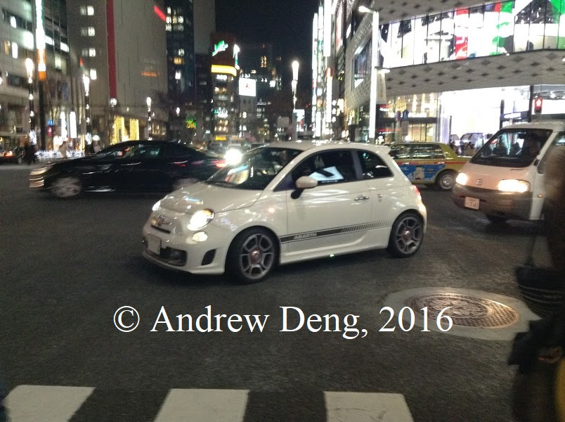 | 2008-present | Abarth (Fiat) | 500 | An Abarth in Japan. | 2016/12/21 | Tokyo, Japan | iPod Touch |
| 2005-2010 | Ford | Mustang | A Mustang with stripes | 2016/10/01 | 16th Ave nearing Leslie | Oukitel K6000 | |
| 1998-2002 | BMW | Z3 M Coupe | BMW Z3 Coupe, M version. Has 3.2L I6 | 2016/10/01 | Carrville Rd @ Roselawn PS | Oukitel K6000 | |
| 2009-present | Nissan | 370Z | Successor to the 350Z. | 2016/09/03 | ??? | Oukitel K6000 | |
| 2005-2010 | Chevrolet | Cobalt SS | Chevy Cobalt Coupe, SS edition. Had both supercharged and turbocharged engine options. | 2016/09/03 | ??? | Oukitel K6000 | |
| 1999-2004 | Ford | Mustang | New Edge Mustang | 2016/08/31 | 401 | Oukitel K6000 | |
| 2006-2010 | Pontiac | Solstice GXP | GM's first two-seater budget sports car since the Pontiac Fiero. This is also the GXP version. | 2016/08/31 | 401 | Oukitel K6000 | |
| 2005-2013 | Chevrolet | Corvette | A C6 Vette. | 2016/08/08 | 404 N | iPod Touch | |
| 2015-present | BMW | X6 M | M version of the ugly BMW X6. | 2016/08/05 | Hwy 7 | Oukitel K6000 | |
| 1996-2004 | Porsche | Boxster S | Baby Porsche. | 2016/06/04 | ??? | iPod Touch | |
| 2003-2008 | Nissan | 350Z | A fairlady with a both black and white. | 2016/06/04 | 16th Ave/Vogel | iPod Touch | |
| 2014-present | BMW | M4 | M version of the 4 series in an ugly yellow colour. | 2016/06/04 | 16th Ave/Leslie | iPod Touch | |
| 2008-2014 | Dodge | Challenger | A challenger with a two-tone colour. | 2016/05/21 | Major Mackenzie/Leslie | iPod Touch | |
| 2003-2008 | Nissan | 350Z | Ah, a fairlady. | 2016/05/21 | 404 S | iPod Touch | |
| 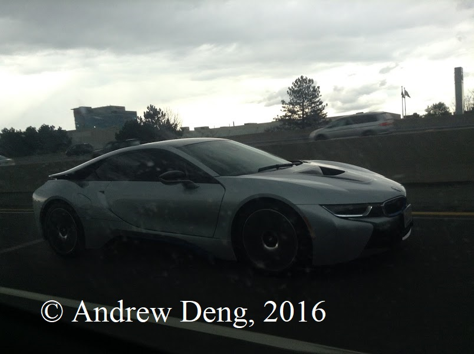 | 2014-present | BMW | i8 | BMW i8, plug-in hybrid sports car | 2016/05/08 | 404 S/Steeles | iPod Touch |
| 2015-present | Ford | Mustang GT | 2 Mustang GTs in non-stock colours one after the other | 2015/10/25 | Consumers Road | iPod Touch | |
| 1997-2002 | Plymouth | Prowler | An... interestingly styled car, to say the least. | 2015/08/03 | Canada One Factory Outlets (Niagara Falls) | iPod Touch | |
 |
2010-2014 | Chevrolet | Camaro SS | Camaro SS with 6.2L V8 | 2014/10/11 | Promenade Mall | iPod Touch |
| 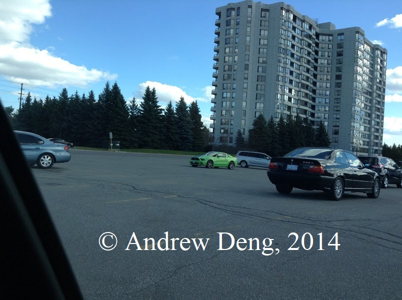 | 2005-2014 | Ford | Mustang GT | Mustang GT with V8 (background) | 2014/10/11 | Promenade Mall | iPod Touch |
| 2004-2010 | BMW | 328i | Old BMW! (foreground) | 2014/10/11 | Paromenade Mall | iPod Touch | |
| 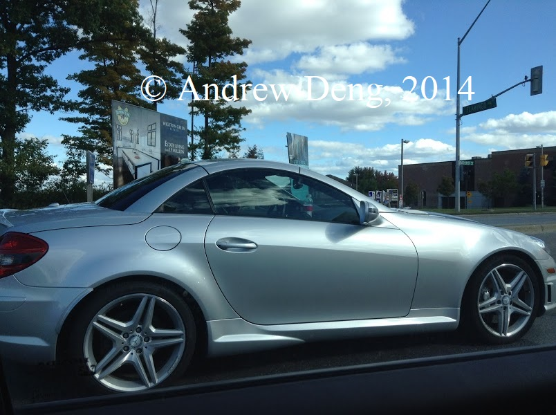 | 2004-2010 | Mercedes-Benz | SLK-Class | SLKs are quite uncommon vehicles. | 2014/10/11 | Bathurst/Flamingo | iPod Touch |
 |
2012-2014 | Tesla | Model S | This was before Teslas were popular and everywhere. | 2014/09/27 | Parking lot somewhere | iPod Touch |
| 2004-2012 | Porsche | Carerra S (997) | Porsche Carerra | 2013/09/16 | Dufferin/Steeles | iPod Touch | |
 |
2000-2005 | Ford | Excursion | The longest and heaviest SUV to ever enter production. It's also modified. | 2013/08/30 | Little Ashley Dr | iPod Touch |
 |
2004-2009 | Honda | S2000 | S2000s are quite uncommon vehicles. | 2013/08/21 | 16th/Leslie | iPod Touch |
| 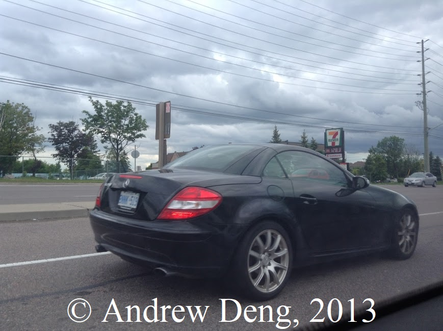 | 2004-2010 | Mercedes-Benz | SLK-Class | SLKs are quite uncommon vehicles. | 2013/06/08 | Rutherford/Weston | iPod Touch |
 |
1993-2002 | Chevrolet | Camaro | Camaros of this generation are uncommon. | 2013/06/04 | Dufferin/407 | iPod Touch |
 |
1999-2006 | Toyota | Celica GT-S | Celicas, especially GT-S trim, are uncommon | 2013/06/01 | McDonald's @ 16th/Yonge | iPod Touch |
| 1998-2006 | BMW | 3-series Wagon | Wagons, especially by luxury brands, are uncommon | 2013/05/25 | Newtonbrook SS? | iPod Touch |
Click the header to sort.
| Image | Year | Make | Model | Description | Date (YYYY/MM/DD) | Location | Camera |
|---|---|---|---|---|---|---|---|
| 2014-present | Lamborghini | Huracan | Purple Lamborghini. From the Suicide Squad Soundtrack. Just kidding. | 2017/06/07 | Valley Vista | Acer T08 | |
| 2010-present | Rolls-Royce | Ghost | Another Rolls! | 2017/05/11 | Highway 400 N | Oukitel K6000 | |
| 2004-2009 | Ferrari | F430 | Rear-engined Ferrari found in Shanghai! | 2017/01/10 | Shanghai, China | iPod Touch | |
| 2014-2017 | Ferrari | California T | A beautiful black California found in Hong Kong. It's also pictured in front of a Ferrari dealer/garage. | 2017/01/08 | Hong Kong | iPod Touch | |
| 2015-present | Ferrari | 488 | A beautiful 488 found in Hong Kong. | 2017/01/08 | Hong Kong | iPod Touch | |
| 2005-2018 | Aston Martin | Vantage | Another Vantage. Found in Hong Kong. Not sure if it's a V8 or V12. | 2017/01/08 | Hong Kong | iPod Touch | |
| 2006-2015 | Audi | R8 | An R8, poor man's Gallardo, from Hong Kong. License plate reads X RAY X. | 2017/01/06 | Hong Kong | iPod Touch | |
| 2013-present | Bentley | Flying Spur | A Flying Spur found in Hong Kong. | 2017/01/05 | Hong Kong | iPod Touch | |
| 2011-2016 | Ferrari | FF | Shitty image, but, it's a rare car. 2291 produced. | 2016/09/16 | Finch/404S Exit Ramp | Oukitel K6000 | |
| 2006-2015 | Audi | R8 | An R8, poor man's Gallardo. This one is a spyder. | 2016/08/08 | Sheppard/404S Exit Ramp | iPod Touch | |
| 2006-2015 | Audi | R8 | An R8, poor man's Gallardo. | 2016/07/22 | Sheppard/404S Exit Ramp | iPod Touch | |
| 2014-2017 | McLaren | 650S | I'm not too familliar with McLarens, I guess it's a rare car? | 2016/06/10 | Clifton Hill, Niagara Falls | iPod Touch | |
| 1959-1968 | Rolls-Royce | Phantom V | An old Rolls-Royce! Only 832 were produced. John Lennon, Elton John, Elvis Presley, Josip Tito, Shah Mohammad Reza Pahlavi, also owned one. | 2016/04/30 | 400 S | iPod Touch | |
| 2005-2018 | Aston Martin | Vantage | Not sure if it's a V8 or V12. | 2016/05/07 | 404 S | iPod Touch | |
| 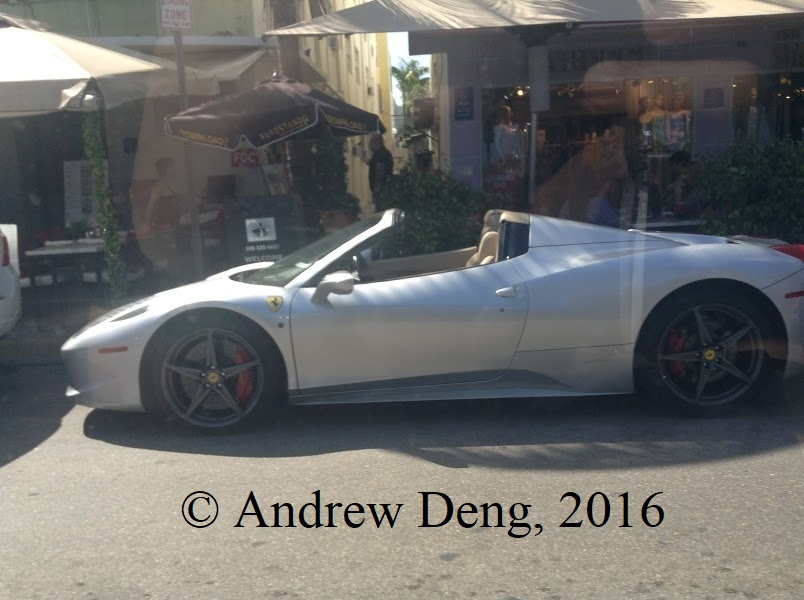 | 2009-2015 | Ferrari | 458 | A 458 Spyder! | 2016/03/15 | Miami Beach, FL | iPod Touch |
| 2007-present | Nissan | GT-R | A Nissan GT-R R35 | 2015/10/24 | ??? | iPod Touch | |
| 2004-2009 | Ferrari | F430 | A Ferrari!. | 2015/10/04 | 404 S Sheppard exit ramp | iPod Touch | |
| 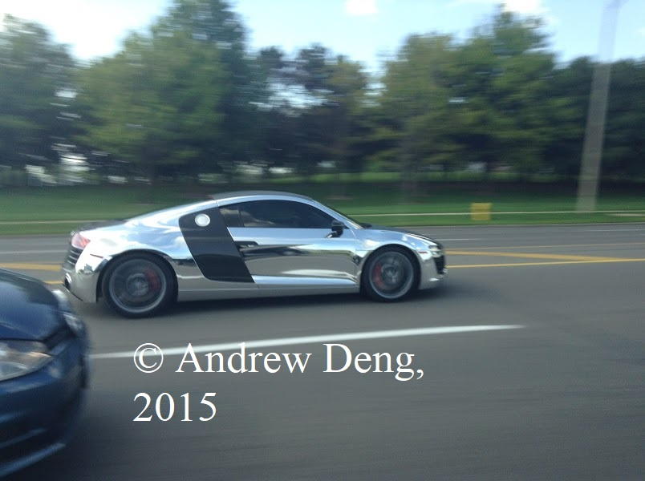 | 2006-2015 | Audi | R8 | An R8 in Chrome colour. | 2015/08/15 | ?? | iPod Touch |
 |
1992-2006 | Hummer | H1 | The original civillian Hummer | 2014/08/31 | Highway 401 | iPod Touch |
| 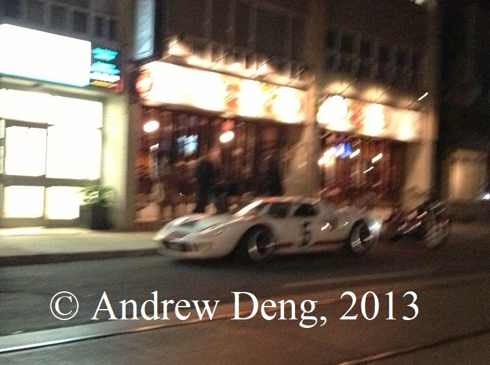 | 1964-1969 | Ford | GT40 | Horrific photo quality, but one rare car. **probably a replica | 2013/08/24 | Bathurst/Dupont | iPod Touch |
 |
2010-present | Rolls-Royce | Ghost | Entry-level Rolls Royce | 2013/08/17 | Highway 400 N | iPod Touch |
Click the header to sort.
| Image | Year | Make | Model | Description | Date (YYYY/MM/DD) | Location | Camera |
|---|---|---|---|---|---|---|---|
| 1991-1992 | Chevrolet | Caprice | Chevy's full size car from the era. Has covered wheels in rear. | 2017/06/01 | Islington Ave | Acer T08 | |
| 1997-1999 | Cadillac | Deville | Cadillac's full size car, with a 4.6 or 4.9L V8. | 2017/05/05 | ??? | iPod Touch | |
| 1995-2002 | BMW | Z3 | A 2 door fun car. | 2017/04/29 | ??? | Oukitel K6000 | |
| 1988-1993 | Chrysler | Dynasty | A midsized Chrysler later replaced by the Chrysler Intrepid. | 2017/04/02 | Major Mackenzie/Bayview | Oukitel K6000 | |
| 1984-1996 | Chevrolet | Corvette (C4) | A nice C4 Corvette. | 2017/03/05 | Major Mackenzie/Leslie | Oukitel K6000 | |
| 1959-1976 | Morris/Austin | Mini | An original Mini found in Hong Kong. | 2017/01/07 | Hong Kong | iPod Touch | |
| 1950-1967 | Volkswagen | Type 2 | A first gen VW Bus found in Japan. Photo quality is shitty, I apologize. | 2016/12/18 | Osaka, Japan | iPod Touch | |
| 1982-1992 | Pontiac | Firebird | Another firebird! You can't really tell if it's a Camaro or Firebird unless you look at the rims. | 2016/10/25 | DVP South | iPod Touch | |
| 1974-1993 | Volvo | 240 | Well, it's an old Volvo. And the first (and probably last) Volvo to appear here. | 2016/10/08 | Elgin Mills/Leslie | Oukitel K6000 | |
| 1973-1987 | GMC | C/K | GMC pickup with a campervan modification. | 2016/09/26 | Rexdale, Toronto | Oukitel K6000 | |
| 1986-1991 | Buick | LeSabre | The Bruknell LeGran from BeamNG.drive is probably based off of this car. | 2016/09/05 | Markham, ON | Oukitel K6000 | |
| 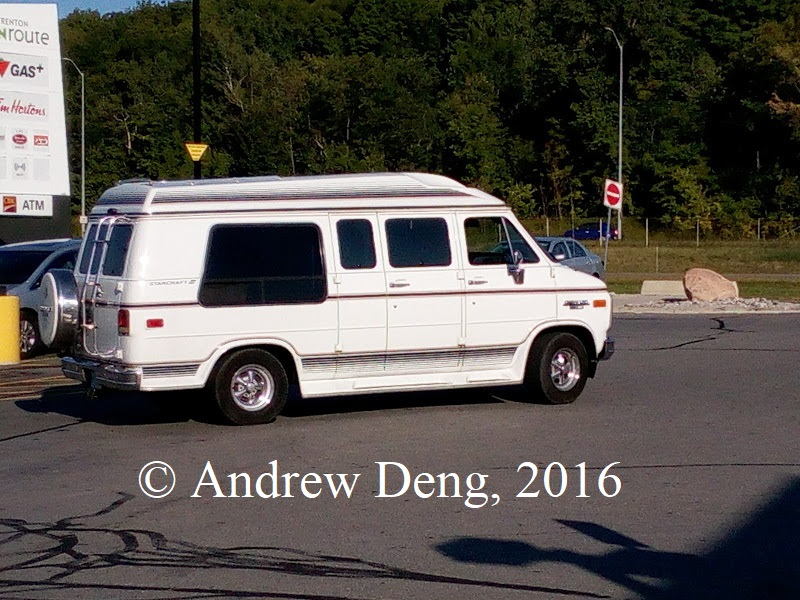 | 1975-1995 | Chevrolet | Van | Chevy Van with camper conversion. | 2016/09/04 | Trenton OnRoute | Oukitel K6000 |
| 1981-1988 | Chevrolet | Monte Carlo | Another 2-door coupe by Chevy. | 2016/09/03 | ??? | Oukitel K6000 | |
| 1982-1991 | Porsche | 944 | Another entry-level Porsche | 2016/08/27 | 404 S | Oukitel K6000 | |
| 1993-1999 | Toyota | Celica | Toyota's entry level sports car from the 1990s. | 2016/08/23 | ??? | Oukitel K6000 | |
| 1978-1982 | Chevrolet | El Camino | Chevrolet's coupe utility vehicle, or Utes, in Australia. | 2016/08/21 | Major Mackenzie | Oukitel K6000 | |
| 1990-1999 | Toyota | MR2 | Toyota's mid-engined sports car, called the poor man's Ferrari due to Ferrari styling cues. | 2016/08/21 | Dufferin/Major Mackenzie | Oukitel K6000 | |
| 1982-1994 | BMW | 325i | An old 3-series. | 2016/08/12 | ??? | iPod Touch | |
| 1990-1991 | Honda | Accord | An old Accord. | 2016/08/05 | Toronto, ON | iPod Touch | |
| 1988-1996 | Pontiac | Grand Prix | Pontiac's version of the Chevy Lumina | 2016/07/29 | Toronto, ON | iPod Touch | |
| 1990-1994 | Chevrolet | Lumina | Chevy's (late) competitor to the Ford Taurus. | 2016/07/23 | Erie, PA | iPod Touch | |
| 1991-1995 | Honda | Civic | CX trim, the base model. Has a 70 hp engine and all manual features (windows, transmission, steering, etc.) | 2016/07/22 | Sheppard Ave | iPod Touch | |
| 1975-1991 | Ford | Econoline | An old Econoline with a campervan conversion. | 2016/07/18 | 401 | iPod Touch | |
| 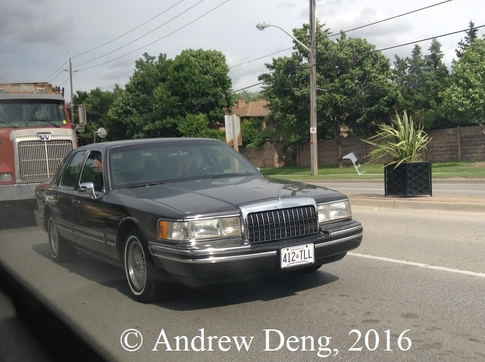 | 1990-1997 | Lincoln | Town Car | A luxury vehicle, with a 4.6 or 4.9L V8. | 2016/06/07 | Major Mackenzie/McNaughton | iPod Touch |
| 1969-1976 | Chevrolet | Corvette Stingray | A C3 Vette Stingray Convertible | 2016/05/26 | Major Mackenzie/Dufferin | iPod Touch | |
| 1979-1981 | Chevrolet | Camaro | An old Camaro | 2016/05/26 | Major Mackenzie/Dufferin | iPod Touch | |
| 1966-1967 | Pontiac | GTO | The first muscle car! | 2016/05/19 | Freedom Trail | iPod Touch | |
| 1967-1979 | Volkswagen | Type 2 | Strange modified VW Bus. | 2016/05/08/td> | 404 N | iPod Touch | |
| 1983-1989 | Alfa Romeo | Spider | I thought this was a Porsche, but apparently not. | 2016/05/06 | Bathurst St | iPod Touch | |
| 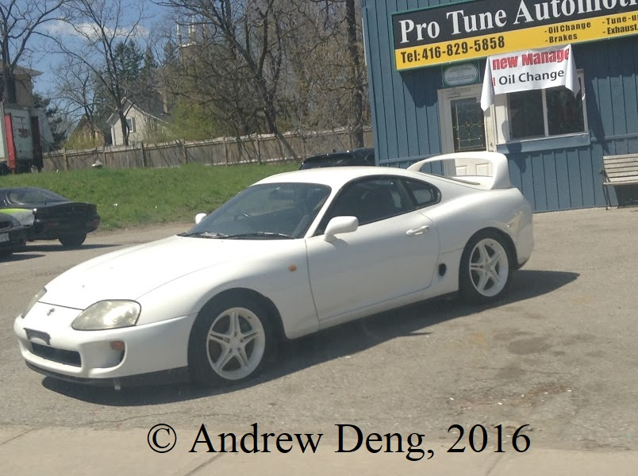 | 1993-2002 | Toyota | Supra | The original Supra with modified rims! | 2016/05/06 | Major Mackenzie/Keele | iPod Touch |
| 1991-1992 | Pontiac | Firebird | Yeah! An old Firebird! They're quite good looking. | 2016/04/20 | Sheppard Ave | iPod Touch | |
| 1960 | Ford | Galaxie Sunliner | Ford Galaxie, full size car from Ford. Related to Lincoln Continental | 2016/03/15 | Miami Beach, FL | iPod Touch | |
| 1955 | Chevrolet | Bel Air | A classic full size car! | 2016/03/15 | Miami Beach, FL | iPod Touch | |
| 1971 | Chevrolet | Chevelle SS | Chevy's performance mid-sized vehicle. | 2016/03/12 | Key West, FL | iPod Touch | |
| 1990-1997 | Land Rover | Defender | An old Defender, a nice off-road vehicle, unlike modern Land Rovers. | 2016/02/07 | 404 S | iPod Touch | |
| 1955 | Oldsmobile | 88 | A beautiful Olds from 1955. Also the Olds version of the Chevy Bel Air. | 2015/10/17 | 404 S | iPod Touch | |
| 1969 | Chevrolet | Camaro | An old Camaro! Notice how the 2014 refresh of the Camaro's taillights were based off of this generation. | 2015/10/17 | 16th Ave/Vogel | iPod Touch | |
| 1964 | Lincoln | Continental | A Lincoln Continental, a luxury car from 1964! Has 7.0 or 7.6L V8 | 2015/09/26 | Congee Phoenix Cuisine @ Sheppard/Conseumers | iPod Touch | |
| 1973-1987 | GMC | C/K | An old GMC truck | 2015/08/22 | ??? | iPod Touch | |
| 1986-1987 | Oldsmobile | Cutlass Supreme | An old Oldsmobile Cutlass. | 2015/08/19 | 404 S/407 | iPod Touch | |
| 1976-1986 | Mercedes-Benz | 190E | An old Merc E class | 2015/07/16 | Keele/Major Mackenzie | iPod Touch | |
 |
1979-1990 | Volkswagen | Type 2 | An old VW Bus with modifications | 2015/06/30 | Jasper National Park | iPod Touch |
| 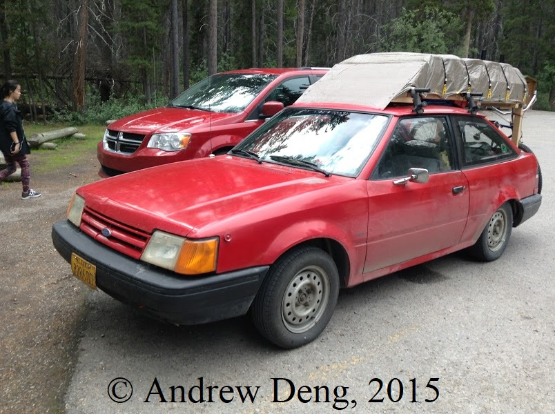 | 1986-1990 | Ford | Escort | An old Ford Escort with a lot of stuff on it and bikes at the rear | 2015/06/30 | Jasper National Park | iPod Touch |
| 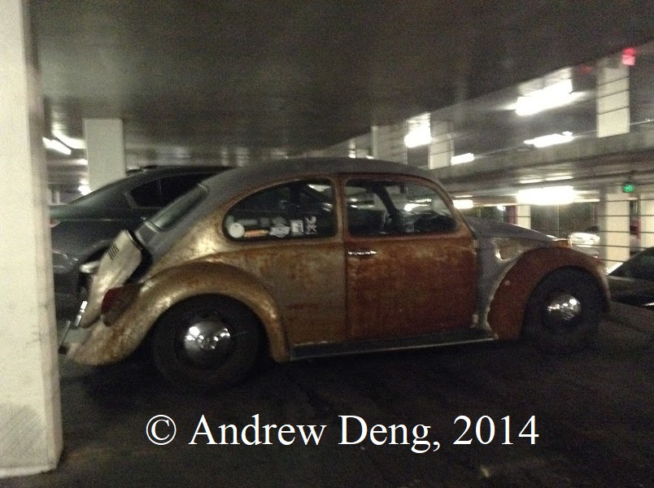 | 1945-1977 | Volkswagen | Beetle | A Beetle that seems to be quite rusted | 2014/12/19 | Circus Circus parking lot, Las Vegas | iPod Touch |
 |
1990-1996 | Toyota | Previa | Minivan from the dustbuster era. | 2014/12/17 | Interstate 15 | iPod Touch |
| 1988-1996 | BMW | 5-series wagon | Old 5 series. Wagon! Wagons are uncommon. This one also has modified rims. | 2014/10/11 | Highway 404/Major Mackenzie | iPod Touch | |
| 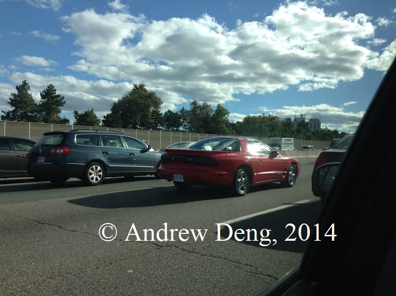 | 1993-2002 | Pontiac | Firebird | Pontiac Firebird! A cooler and better looking Camaro. Also I love Pontiacs. | 2014/10/11 | Highway 404 S | iPod Touch |
| 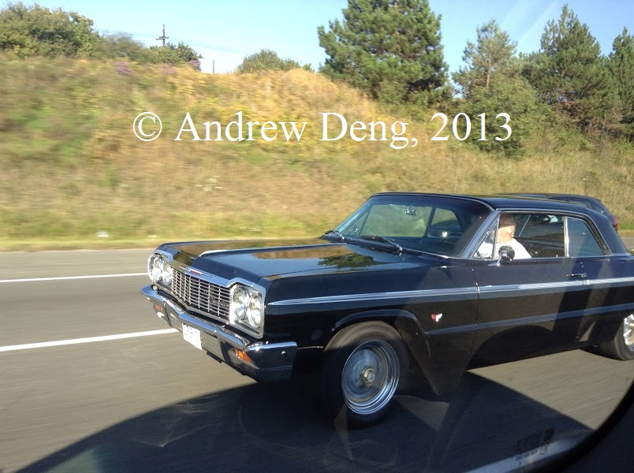 | 1964 | Chevrolet | Impala SS | Old Impala SS, with 5.7L or 6.7L V8s. | 2014/09/27 | Highway 401?? | iPod Touch |
| 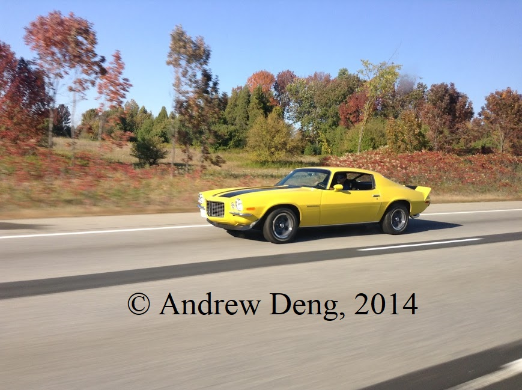 | 1972 | Chevrolet | Camaro | It's an old Camaro! | 2014/09/27 | Highway 401?? | iPod Touch |
| 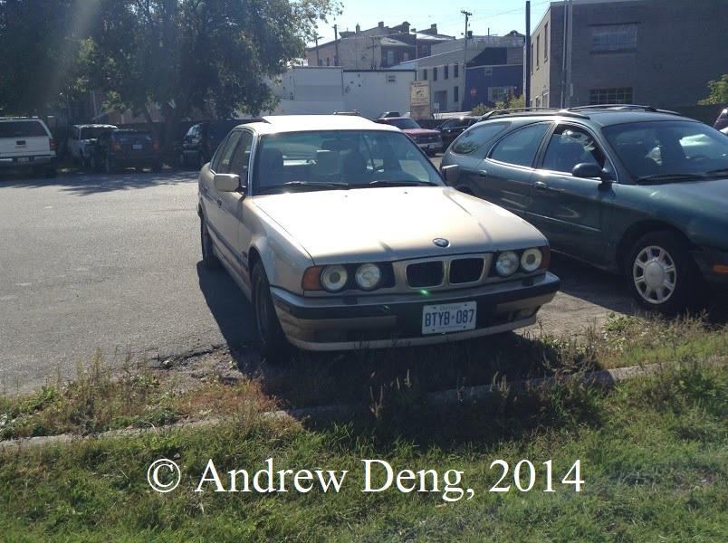 | 1987-1996 | BMW | 5-series | Old BMW | 2014/09/27 | Parking lot somewhere | iPod Touch |
 |
1994-1998 | Ford | Mustang | Old Mustang | 2014/09/27 | Parking lot somewhere | iPod Touch |
| 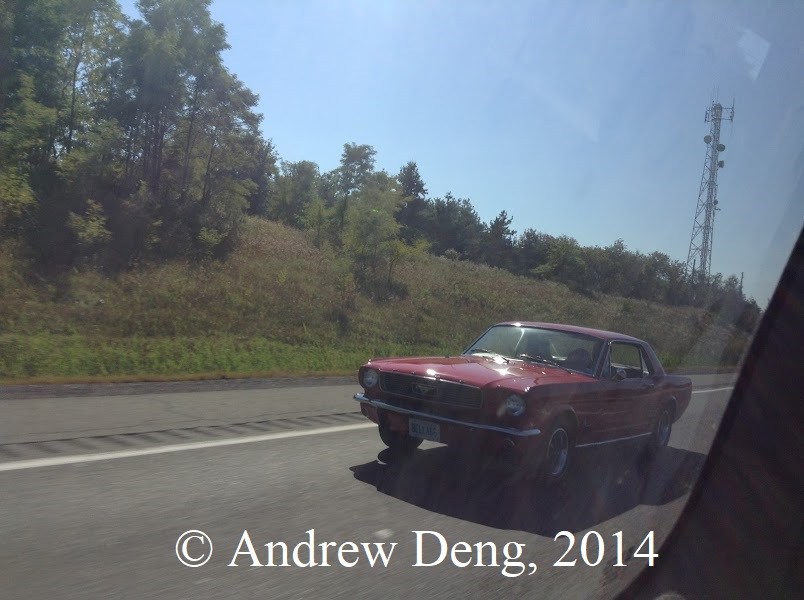 | 1965-1973 | Ford | Mustang | Original Mustang! | 2014/09/27 | Highway 401?? | iPod Touch |
 |
1982-1994 | BMW | 3-series | Old 3 series | 2014/09/27 | Highway 401?? | iPod Touch |
 |
1984 | Buick | LeSabre | The Buick version of the Chevy Caprice | 2014/08/31 | ??? | iPod Touch |
 |
1948-1990 | Citroen | 2CV | An old Citroen in France. Kinda like the VW Beetle, but a Citroen. | 2014/07/08 | France | iPod Touch |
 |
1965-1973 | Fiat | 500 | A classic Fiat 500 in Paris | 2014/07/06 | Paris, FR | iPod Touch |
| 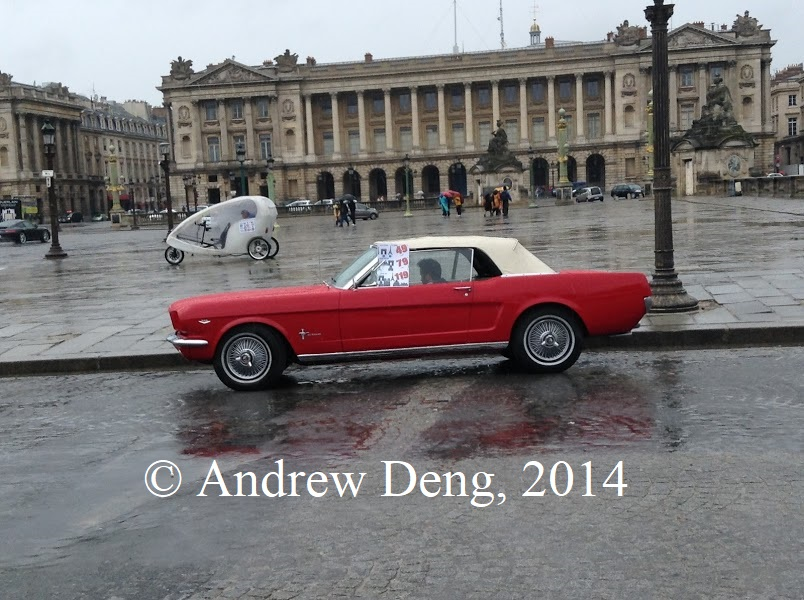 | 1965-1973 | Ford | Mustang | A classic Ford Mustang in Paris??? | 2014/07/06 | Paris, FR | iPod Touch |
 |
1972 | Pontiac | LeMons | 2013/06/15 | 16th/Fern | iPod Touch |
Click the header to sort.
| Image | Year | Make | Model | Description | Date (YYYY/MM/DD) | Location | Camera |
|---|---|---|---|---|---|---|---|
| 1992-2014 | Ford | Econoline | You don't usually see prisoner transport vans parked around. | 2016/03/16 | Miami Beach, FL | iPod Touch | |
| 1997-2004 | Ford | F-150 | A very decorated F150. | 2016/03/14 | Key West, FL | iPod Touch | |
| 2000-2015 | Ford | F-650/F-750 | A limo built on a medium-duty truck chassis! What?!?! | 2015/09/12 | McDonald's @ Hwy 7/Valleymede | iPod Touch | |
| 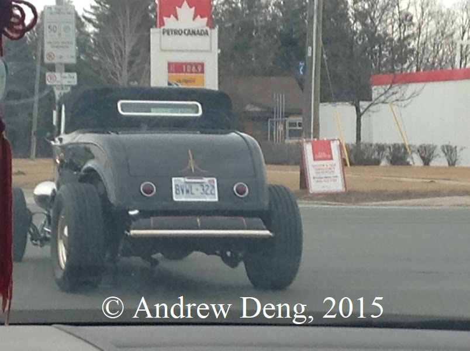 | ??? | ??? | ??? | A black hot rod | 2015/04/03 | Bayview/Major Mackenzie | iPod Touch |
| 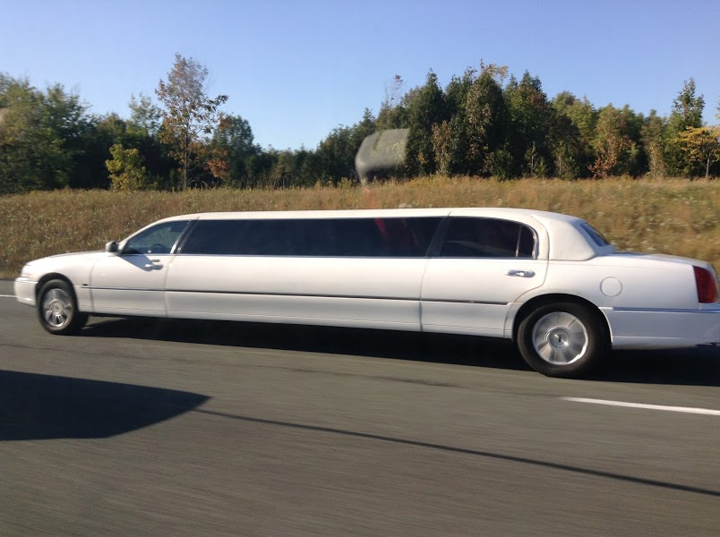 | 2003-2011 | Lincoln | Town Car | A limo Town Car | 2014/09/27 | 401??? | iPod Touch |
| 2004-2013 | BMW | 3-series? | A heavily modified BMW | 2014/08/31 | QEW | iPod Touch | |
 |
??? | ??? | ??? | A car that's only for one person? | 2014/07/04 | Amsterdam, NL | iPod Touch |
 |
2006-2009 | Pontiac | Montana SV6 | This one has a strange body kit. | 2013/08/10 | Highway 401 | iPod Touch |
Click the header to sort.
| Image | Year | Make | Model | Description | Date (YYYY/MM/DD) | Location | Camera |
|---|